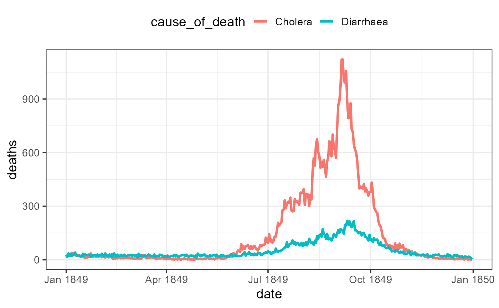

Daily Deaths from Cholera and Diarrhaea in England, 1849
CholeraDeaths1849.RdDeaths from Cholera and Diarrhaea, for each day of the month of each of the 12 months of 1849.
This was used by William Farr (GRO & Farr, 1852, Plate 2) to produce a time series chart of these deaths, in which he also recorded various meteorological phenomena (barometer, wind, rain), to see if he could find any patterns. This chart is available on the web site for Friendly & Wainer (2021) as Fig 4.1, https://friendly.github.io/HistDataVis/figs-web/04_1-cholera-diarrhea.png.
{kind=link}
James Riley (2023) notes, "Cholera 1849 has special significance --- it is likely to be one of few modern pandemics that was completely unmitigated."
Usage
data("CholeraDeaths1849")Format
A data frame with 730 observations on the following 6 variables.
montha character vector
cause_of_deatha factor with levels
CholeraDiarrhaeaday_of_montha character vector
deathsa numeric vector
datea Date
day_of_weekan ordered factor with levels
Mon<Tue<Wed<Thu<Fri<Sat<Sun
Details
The data set was transcribed by James Riley to a spreadsheet, https://github.com/jimr1603/1849-cholera. He notes, "the scan at Internet Archive has a fold on day 11. I have derived this column from the row totals."
Source
The original source is: General Register Office, William Farr (1852), Report on the Mortality of Cholera in England, 1848-49. London: Printed by W. Clowes, for HMSO; scanned by the Internet Archive from the collection of King's College London and available at https://archive.org/details/b21308251/page/20/mode/2up.
References
Friendly, M. & Wainer, H. (2021). A History of Data Visualization and Graphic Communication, Harvard University Press. https://www.hup.harvard.edu/catalog.php?isbn=9780674975231.
Riley, J. (2023). "Cholera in Victorian England", blog post, https://openor.blog/2023/07/27/cholera-in-victorian-england/.
Examples
data(CholeraDeaths1849)
str(CholeraDeaths1849)
#> tibble [730 x 6] (S3: tbl_df/tbl/data.frame)
#> $ month : chr [1:730] "Jan" "Jan" "Jan" "Jan" ...
#> $ cause_of_death: Factor w/ 2 levels "Cholera","Diarrhaea": 1 1 1 1 1 1 1 1 1 1 ...
#> $ day_of_month : chr [1:730] "1" "2" "3" "4" ...
#> $ deaths : num [1:730] 13 19 28 24 23 39 25 35 26 23 ...
#> $ date : Date[1:730], format: "1849-01-01" "1849-01-02" ...
#> $ day_of_week : Ord.factor w/ 7 levels "Mon"<"Tue"<"Wed"<..: 1 2 3 4 5 6 7 1 2 3 ...
# Reproduce Farr's (1852) plate 2
library(ggplot2)
CholeraDeaths1849 |>
ggplot(aes(x = date, y = deaths, colour = cause_of_death)) +
geom_line(linewidth = 1.2) +
theme_bw(base_size = 14) +
theme(legend.position = "top")
